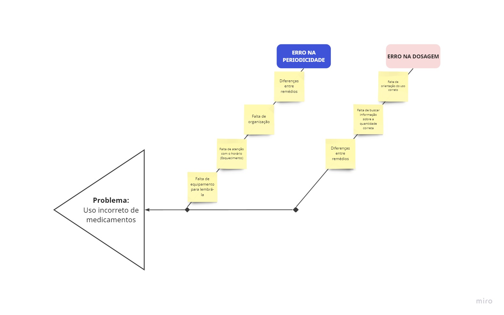

VISÃO DO PRODUTO E PROJETO
1. VISÃO GERAL DO PRODUTO
1.1. Problema
Nosso projeto visa resolver problemas relacionados a má gestão do uso de medicamentos, com base em nossas pesquisas feitas, a indústria farmacêutica tem tido uma crescente nos últimos anos referente a fabricação de remédios mesmo com o crescimento populacional tendendo se estabilizar, ou seja, esse aumento dos medicamentos vendidos nos mostra que as pessoas estão consumindo mais remédios periodicamente, e muitas delas se esquecem de tomá-los no horário ou dosagem correta, outro fator agravante são que alguns usuários de remédios não se esquecem da última vez que tomaram o remédio.

1.2. Declaração de Posição do Produto
1. Qual é o produto que você se propõe a desenvolver?
Uma aplicação mobile para controle de horário e dosagem de medicamentos, com alertas nos horários da medicação e registro de todas as vezes tomadas, e esse registro pode ser compartilhado e acompanhado, pretendemos também trazer algumas informações úteis sobre essa medicação.
2. O que torna este produto diferente dos seus concorrentes?
Pretendemos registrar todos os remédios e os dias que foram tomados em um banco de dados, onde o usuário e outras pessoas podem ter acesso, como médicos, familiares e etc, trazendo uma transparência e acompanhamento maior para esse usuário.
3. Quem são os usuários-alvo e clientes do produto?
Usuários recorrentes de medicamentos.
4. Por que os clientes deveriam utilizar / comprar este produto?
Pois ele vai poder ter registrado todos os dias e horários que deve tomar o remédio e também poderá enviar esses registros para outras pessoas acompanharem seus registros.
| Para | Usuários de medicamentos e Acompanhantes de usuários de medicamentos. |
|---|---|
| Quem | Possui dificuldades com o controle de seus medicamentos e o uso correto deles. |
| O MedicaCerto | é um Aplicativo. |
| Que | Auxilia com: Uso do medicamento correto, Horário correto do uso dos medicamentos, Dosagem correta dos medicamentos, Não esquecimento dos medicamentos usados pelo usuário, Não esquecimento do uso periódico dos medicamentos e Acompanhamento de profissionais ou familiares do uso de medicamento pelos usuários cadastrados. |
| Ao contrário | Dos aplicativos: Medisafe, Pill Reminder e Dosecast |
| Nosso produto | Aborda as diversas causas de problemas com o uso de medicamentos procurando melhorar e/ou facilitar cada uma delas, além de trazer a possibilidade do paciente disponibilizar os dados do consumo dos seus medicamentos para acompanhantes e demais pessoas interessadas. |
1.3 Objetivo do Produto
O objetivo principal do produto será fornecer um meio para as pessoas que precisam tomar alguma medicação periodicamente, sejam lembradas de tomar a medicação no horário correto. Além disso, o projeto também têm alguns objetivos secundários, como:
- Guardar um registro dos remédios que o usuário tomou dentro de um período de tempo.
- Ter um auxílio com relação às dosagens dos medicamentos, para as pessoas que não sabem.
1.4 Tecnologias a Serem Utilizadas
- React Native
- NodeJS
- AsyncStorage
2. VISÃO GERAL DO PROJETO
2.1. Organização do Projeto
Tabela de Organização da Equipe
| Papel | Atribuições | Responsável | Participantes |
|---|---|---|---|
| Equipe1: Desenvolvedor Backend | Garantir percistência de dados | Rodrigo | Carlos, Mateus |
| Equipe 2: Desenvolvedor Frontend | Desenvolver UI | Júlio | Luan, Mateus |
| Product Owner | Garantir interesses do cliente | Luan | X |
| Scrum Master | Garantir o uso do scrum | Júlio | X |
| Designer de Interface do Usuário | Desenvolver protótipos visuais | Luan | Júlio, Mateus |
| Engenheiros de Requisitos | Garantir atulização dos requisitos | Carlos | Rodrigo |
| Cliente | Definir o valor de negócio | Mariana | X |
2.2. Planejamento das Fases e/ou Iterações do Projeto
UNIDADE 2: Definição do Backlog, Definição das US, Definição do MVP e Protótipo de Alta Fidelidade:
| Sprint | Produto (Entrega) | Data Início | Data Fim |
|---|---|---|---|
| sprint 1 | Elicitação de requisitos e Definição do Backlog | 03/05/23 | 10/05/23 |
| sprint 2 | Equipe 1: Alterações do Backlog, Definição de US (User Story Mapping) e Definição de MVP Equipe 2: Protótipo de Alta Fidelidade. |
10/05/22 | 17/05/23 |
| sprint 3 | Refinamento e Configuração de Ambiente | 17/05/23 | 23/05/23 |
UNIDADE 3: MVP 1:
| Sprint | Produto (Entrega) | Data Início | Data Fim |
|---|---|---|---|
| sprint 4 | Organização das Sprints e Confuguração de ambiente | 24/05/23 | 31/05/23 |
| sprint 5 | US07, US09 & US11 | 31/05/23 | 07/06/23 |
| sprint 6 | US13, US05 & US10 | 07/06/23 | 14/06/23 |
| sprint 7 | US16 & US21; Integrações finais | 14/06/23 | 20/06/23 |
UNIDADE 4: MVP 2:
| Sprint | Produto (Entrega) | Data Início | Data Fim |
|---|---|---|---|
| sprint 8 | US12, US17 | 21/06/23 | 28/06/23 |
| sprint 9 | US15, US20 | 28/06/23 | 05/07/23 |
| sprint 10 | US08, US06 | 05/07/23 | 12/07/23 |
| sprint 11 | US18, US19 | 12/07/23 | 18/07/23 |
2.3. Matriz de Comunicação
A equipe deverá ter uma comunicação periódica como evidenciado na tabela:
| Descrição | Área/ Envolvidos | Periodicidade | Produtos Gerados |
|---|---|---|---|
| Deily Meeting | Equipe do Projeto | Diário | - Relatório das atividades feitas no dia por cada um dos membros |
| Sprint Panning | Equipe do Projeto | Semanal (Toda Quarta) | - Sprint Backlog |
| Sprint Retrospective | Equipe Projeto e monitora | Semanal (Toda Quarta) | - Lista do que pode ser melhorado |
| Sprint Review | Equipe do projeto | Semanal (Toda Quarta) | - Entregas feitas durante a sprint |
2.4. Gerenciamento de Riscos
| Possível risco | Causa | Prevenção de risco | Correção |
|---|---|---|---|
| Saída de membro do projeto | Trancamento de disciplina, afastamento por motivos de saúde e entre outros | Contato contínuo com os membros da equipe, verificando a saúde e desenvolvimento deles | Reatribuição das atividades entre os demais membros |
| Comunicação Ineficiente com Cliente | Falta de disponibilidade do cliente | Verificação semanal do tempo de resposta do cliente | Redefinição do escopo e planejamento, além da escolha de novo cliente |
| Alteração do escopo | Definição de um escopo muito grande se tornando a sua execução inviável | Não subestimar a quantidade de funcionalidades que podem ser entregues em um ciclo | Revisão do backlog e do planejamento dos ciclos |
| Baixo comprometimento da equipe | Baixo rendimento dos membros nas entregas ao longo do projeto | Manter um alinhamento de todos os membros com as demandas das atividades realizadas | Reatribuição das atividades entre os demais membros |
| Planejamento ruim | Planejamento com definição de datas não condizentes com o contexto da equipe e do projeto | Alinhamento da equipe com os prazos estabelecidos durante todo o contexto do projeto | Revisão do backlog e do planejamento dos ciclos |
| Falta de comunicação da equipe | Falta de conversa entre os membros da equipe sobre determinados tópicos | Reforçar a importância da comunicação durante o andamento do projeto, e pontuar as falhas para não acontecerem mais | Encorajar a comunicação e estabelecer uma cultura de comunicação |
| Problemas de saúde pessoal ou familiar | Membro da equipe fica menos ativo por ter que acompanhar algum familiar ou ele prórpio para tratamento médico | O membro deve comunicar a equipe caso algo do tipo aconteça para que a equipe possa estabelecer os devidos planos de mitigação de riscos | Menos atribuições de responsabilidade a esse membro, reatribuição de atividades entre a equipe e diminuição do escopo da sprint se possível (alteração no cronograma) |
| Critérios mal definidos | Critérios de US mal definidos ou pouco definidos, ocasionando em comportamentos indesejados das funcionalidades | Revisar os critérios minuciosamente antes de aprová-los | Incluir novos critérios para evitar os comportamentos indesejados. |
2.5. Critérios de Replanejamento
O projeto deverá ser replanejado em caso de:
- O projeto deverá ser replanejado em caso de:
- Escopo de projeto muito grande ou muito curto para o tempo da disciplina.
- Saída ou não participação de um ou mais membros da equipe.
- Alteração no escopo ou objetivos do projeto.
- Atraso acumulado de alguma parte do ciclo de desenvolvimento.
Em caso de haver alteração no plano do projeto, a equipe deverá:
- Reavaliar os requisitos.
- Revisar os ciclos de desenvolvimento.
- Reavaliar o cronograma.
- Realocar as tarefas.
3. PROCESSOS ESCOLHIDOS
3.1. PROCESSOS DE ENGENHARIA DE SOFTWARE
Nosso projeto tem um prazo curto e fixo para entrega, e ainda não temos todos os requisitos do produto definidos. Para lidar com essas incertezas e aproveitar a disponibilidade do cliente, escolhemos adotar a abordagem de desenvolvimento ScrumXP. Essa metodologia ágil nos permite ser flexíveis e realizar atividades simultâneas, o que ajuda a adiantar nosso trabalho. Com o ScrumXP, teremos um ciclo de vida ágil e poderemos receber feedback constante do cliente para melhorar o produto. Isso traz mais transparência e controle, gerando confiança no cliente. Como temos um prazo curto e ainda não conhecemos todos os requisitos, as revisões e planejamentos de sprint serão fundamentais para refinamos os requisitos a cada sprint, aproveitando ao máximo a disponibilidade do cliente.
3.2. PROCESSO DE ENGENHARIA DE REQUISITOS
Levando em conta que o processo de desenvolvimento escolhido foi ágil, também fizemos a escolha do Processo de Engenharia de Requisitos participativo. Isso porque o processo participativo prevê uma relação próxima e constante com o cliente e um fluxo de trabalho formado por iterações contínuas na qual a equipe de desenvolvimento realiza pequenas atividades que são validadas pelo cliente. Esse comportamento do processo participativo interage muito bem com o processo ágil por terem os mesmos princípios. Com isso, tendo como referência Sommerville, que diz que o processo de escolha de requisitos deve passar por um estudo de viabilidade, levantamento e análise, pela documentação e validação, todos esses processos terão a participação direta do cliente.
4. ATIVIDADES
4.1. Atividade 1 - Requisitos
| Atividade | Método | Ferramenta | Entrega |
|---|---|---|---|
| Elicitação e Descoberta | Entrevista | Discord | Conversa da equipe com o cliente buscando extrair informações para a definição dos requisitos. |
| Análise e Consenso | Reunião | Discord | Conciliar desenvolvedor com cliente em relação aos requisitos para o projeto. |
| Declaração | Histórias de usuários | Github e Miro | Comunicação clara e com linguagem natural de uma forma a deixar claro os requisitos estabelecidos |
| Organização e Atualização | Product Backlog | Kanban (Miro) | Manter uma organização e observar o estado de cada requisito. |
| Representação | Protótipo | Figma | Apresentação visual de alta e baixa fidelidade dos requisitos simulando a sua aplicação final. |
| Verificação e Validação | Revisão e Inspeção dos requisitos | Google Docs | Confirmação de que os requisitos corretos foram feitos da maneira correta |
4.2. Atividade 2 - Design
| Atividade | Método | Ferramenta | Entrega |
|---|---|---|---|
| Interface de usuário | Protótipo de Baixa fidelidade | Papel e Lápis | Protótipo para entendimento inicial da aplicação |
| Interface de usuário | Protótipo de Alta fidelidade | Figma | Protótipo das interfaces do aplicativo |
4.3. Atividade 3 - Construção
| Atividade | Método | Ferramenta | Entrega |
|---|---|---|---|
| Implementação do MVP1 e MVP2 | Programação em pares | Desenvolvimento das entregas da aplicação | |
| Validação do produto com o cliente | Reunião | Discord | Validar se as entregas realizadas pela equipe atendem aos requisitos |
4.4. Atividade 4 - Teste
| Atividade | Método | Ferramenta | Entrega |
|---|---|---|---|
| Teste das unidades e métodos da aplicação | Teste unitário | VsCode | Identificação e correção de erros no desenvolvimento da aplicação |
5. LIÇÕES APRENDIDAS
5.1. Unidade 1
Na Unidade 1 tivemos contato com o que é realmente a Engenharia de Requisitos. Então, tivemos um maior entendimento do papel dos requisitos no projeto e como eles devem ser trabalhados durante todo o processo, com todas as suas atividades fixas, as suas diferentes abordagens, seus valores, seus princípios que podem variar de acordo com o contexto do projeto.
Ademais, tivemos um maior entendimento em relação as abordagens de desenvolvimento de software, os tipos de ciclos de vida e os processos de desenvolvimento existentes. Logo após, utilizamos esse conhecimento adquirido para escolher um processo para o desenvolvimento do nosso produto juntamente com alguns critérios apresentados em sala.
5.2. Unidade 2
Nesta unidade foram apresentados questões sócio-técnicas e tipos de regras de negócio que são fatores que devem ser levados em consideração quando estamos tratando de requisitos. Além disso, foi discutido mais a fundo o que de fato é um requisito, quais são os tipos de requisitos e suas características, afunilando então em como deve ser feita as suas declarações.
Também foram apresentadas as atividades de engenharia de requisitos, com todas as suas particularidades como: técnicas associadas e seus devidos resultados. Tais atividades nos guiaram a produzir diversos documentos e soluções que nos auxiliam no desenvolvimento do projeto.
5.3. Unidade 3
Em relação a unidade 3 estamos o SAFe entendendo alguns pontos importantes do framework e também seu meta-modelo de requisitos. Ademais, desenvolvemos alguns artefatos como o PBB e o BDD que nos ajudaram na construção e refinamento do product backlog.
Comparando-se essa unidade com as demais, conseguimos perceber que foi uma unidade que tivemos a oportunidade de colocar em prática todas os métodos e modelos estudados anteriormente, fixando ainda mais o conhecimento. Tal fato nos ajudou a desenvolver o MVP1 e a oferecer ao nosso cliente um aplicativo que possua valor de mercado.
5.4. Unidade 4
Por ultimo vimos o User Story Mapping que oferece uma abordagem para entender e priorizar os requisitos de um software. Além disso, o User Story Mapping facilita a identificação de funcionalidades essenciais e permite que a equipe se concentre nas necessidades reais dos usuários, priorizando o desenvolvimento de recursos de maior valor.
Ademais, estudamos os Casos de Uso que desempenham um papel crucial na especificação dos requisitos funcionais do sistema. Descrevendo as interações entre atores e o sistema em cenários específicos, fornecendo uma ideia de como o sistema deve se comportar em diferentes situações.
6 REFERÊNCIAS BIBLIOGRÁFICAS
Uso de medicamentos de forma incorreta: http://www.conselho.saude.gov.br/ultimas_noticias/2005/medicamentos.htm
Historico de revisão
| Data | Versão | Descrição | Autor |
|---|---|---|---|
| 24/04/23 | 1.0 | Criação do arquivo | Júlio, Luan e Rodrigo |
| 25/04/23 | 1.1 | Correção unidade 1 | |
| 26/06/23 | 1.2 | Unidade 2, 3 e riscos | Mateus de Almeida |
| 05/07/23 | 1.3 | ATT Riscos | Rodrigo Wright |
| 17/07/23 | 1.4 | ATT lições aprendidas | Mateus de Almeida |